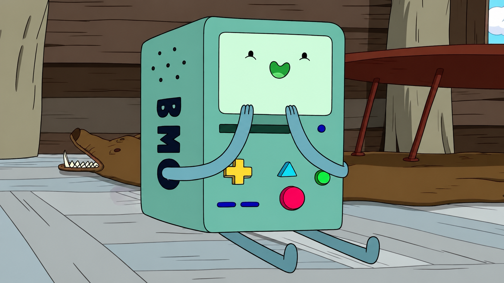

Sobre BMO
BMO es la consola de videojuegos, computadora y compañera inseparable de Finn y Jake en la casa del árbol. Con una pantalla verde, voz aguda y una imaginación enorme, BMO juega videojuegos, graba videos caseros, cocina y se comporta como un miembro más de la familia, alternando entre momentos dulces e inocentes y otros sorprendentemente maduros o ocurrentes. Aunque es una máquina creada por Moe, BMO tiene su propia personalidad y un mundo interior muy rico, incluyendo a su reflejo o alter ego "Fútbol", lo que lo convierte en uno de los personajes más entrañables y únicos de Hora de Aventura.